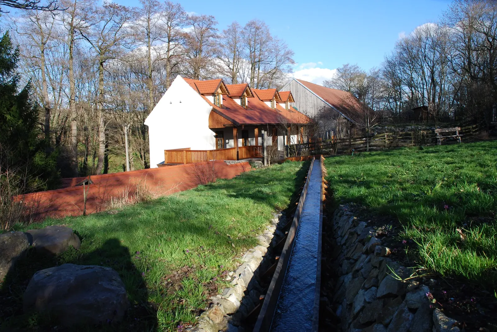
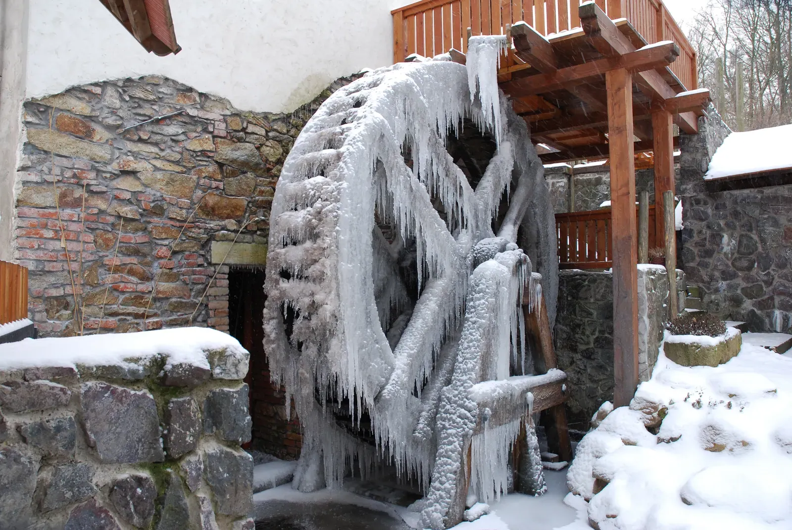
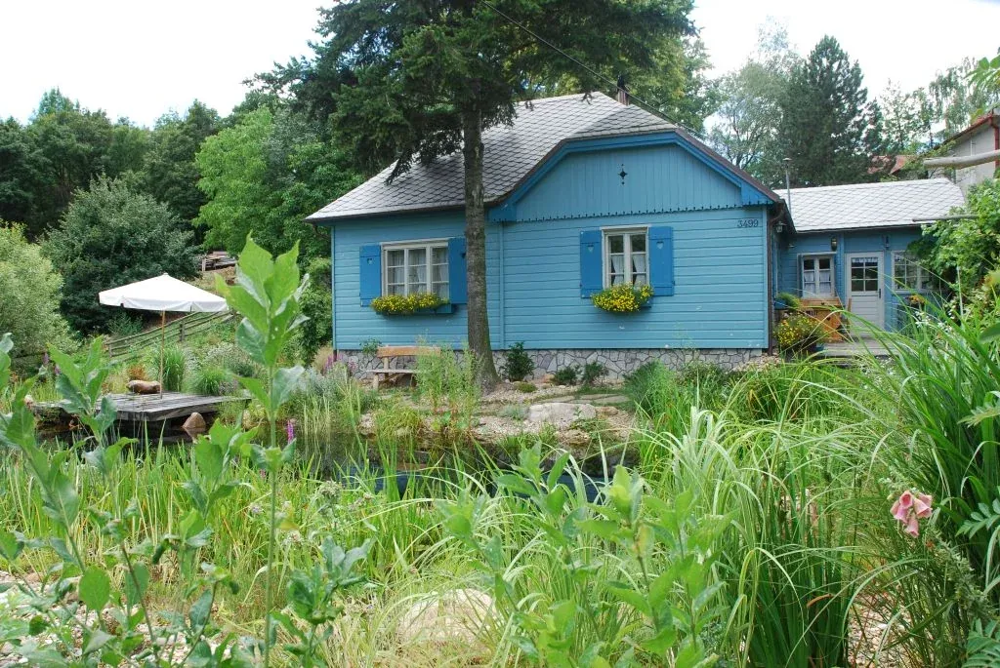
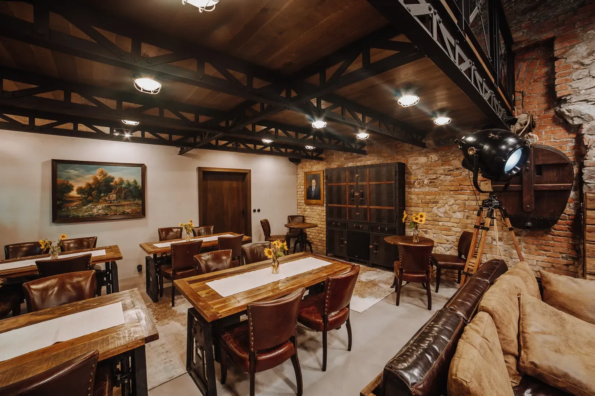
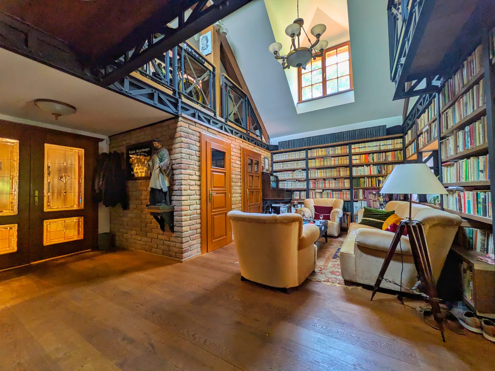
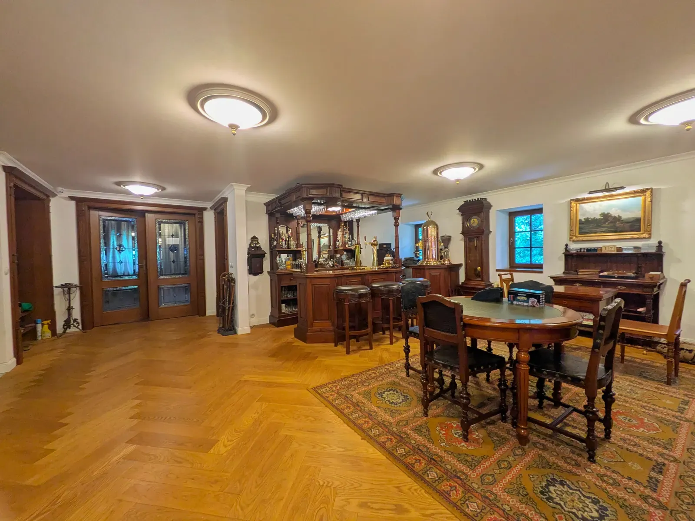
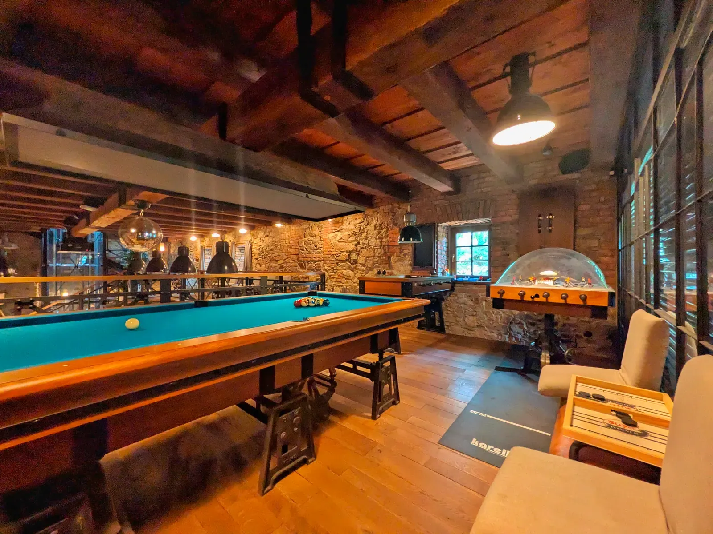
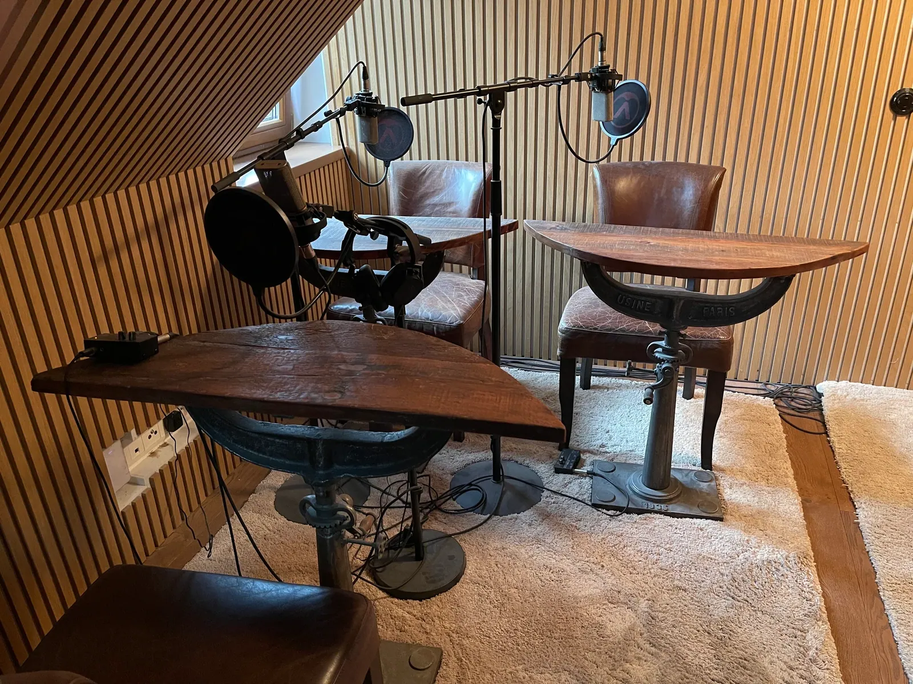
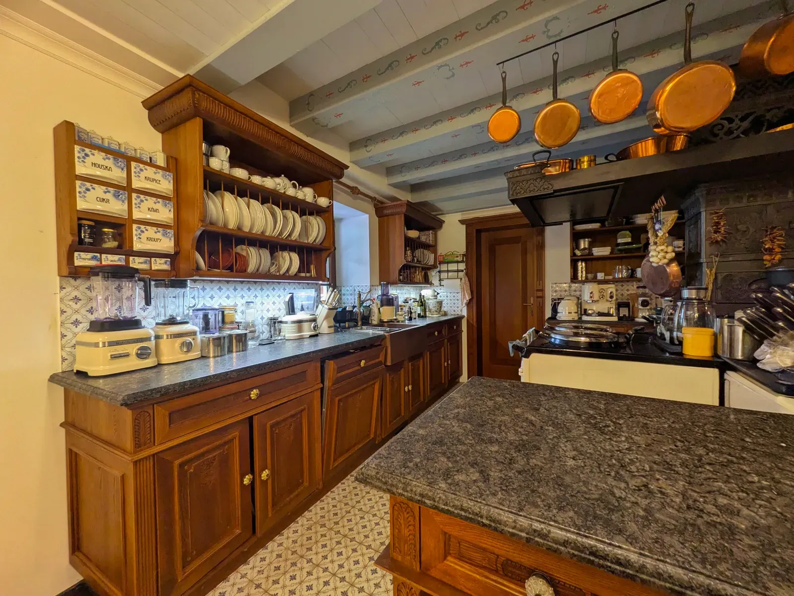

Priestor pre sústredenie
Miesto, ktoré
mení tempo
Historický mlyn v Modre-Harmónii dostal nový život ako súkromné miesto pre vzdelávanie, tvorbu a stretnutia. Každá jeho časť má vlastný charakter.
Dohodnúť si prehliadku →Tri priestory
Kde sa čo deje
Od kruhového sedenia počas workshopov cez prednášky v hale až po rozhovory pri krbe.
Klenbová učebňa
Kruhové sedenie pre šestnásť ľudí pod tehlovou klenbou. Tu prebieha samotný workshop a nácvik vo dvojiciach.
Prednášková hala
Kamenná hala s pódiom, krbom a klavírom. Kapacita do štyridsiatich ľudí pri prednáškach a firemných stretnutiach.
Posedenie pri krbe
Kožené kreslá, oheň a ticho. Miesto, kde sa dohovorí to, čo sa cez deň otvorilo.
Dvor a terasa
Obnovené vodné koleso, terasa nad potokom a dvor na prestávky aj na obed pod holým nebom.
Galéria
Prierez miestom
Deväť záberov od exteriéru a vodného kolesa cez spoločenské priestory až po zázemie, ktoré k mlynu patrí.









Prehliadka na videu
Celý mlyn
za jednu prehliadku
Od okolia a vodného kolesa cez halu až po klenbovú učebňu, aj s históriou miesta. Video je dlhšie, zato uvidíte mlyn tak, ako keby ste ním prechádzali.
Čo tu môžete mať
Nielen naše
workshopy
Mlyn prenajímame aj na vaše vlastné stretnutia, s obsluhou a so stravou.
Ako sa k nám dostanete
Pri starom mlyne
3499, Modra
Modra-Harmónia leží na úpätí Malých Karpát, približne štyridsať minút autom z Bratislavy. Parkovanie je priamo pri mlyne.
Organizačné pokyny vrátane presnej navigácie dostanú prihlásení účastníci spolu s potvrdením termínu.
Otvoriť v mapách →